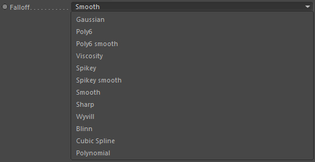

Parameters
Parameters
Particle Group
The particle group to calculate the volume property information for.
Particles

The particle type of the Particle Group to use.
Passive
Vorticity
Liquid
Diffuse
Kernel

By default a cubic kernel (=falloff curve) will be used for weighting neighboring particle data.
Here you can define a custom kernel.
Basically you kind of remap the particle density values. Though not as a post process but directly in the calculations.
Note: If you wanted to remap densities as a post process, you could use a POP::Property operator.
Density
This calculates the particle density of the given particle group (this is NOT a density of matter but only how close particles are located to each other in space).
Iso-Density
This calculates an unnormalized particle isodensity.
Weighted Position
This calculates a weighted position which is for example required by the anistropic mesher but can also be used by an isotropic mesher.
The weighted positions may result in a smoother particle distribution and therefore smoother surface reconstructions.
Influence Radius
To find particles nearby this radius defines the maximum distance around each particle to find neighboring particles.
Note: If you are using it for a thin sheet algorithm, this radius should be equal to the radius used in the thin sheet algorithm.
Falloff

Only used if 'Kernel' is undefined
Defines the falloff kernel. See 'Kernel' for more detailed information.
Gaussion
Poly6
Poly 6 smooth
Viscosity
Spikey
Spikey smooth
Smooth
Sharp
Wyvill
Blinn
Cubic Spline
Polynominal